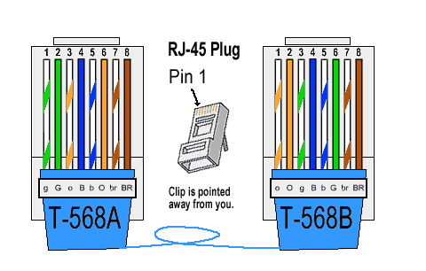
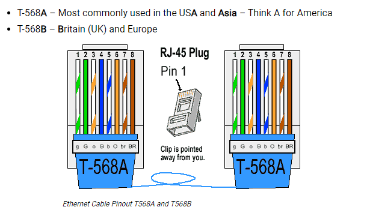

以太网电缆
网电缆由四对双绞铜线和250兆赫的带宽组成，支持高达10 Gbps（10GBASE-T）的数据传输速度，距离最远可达约180英尺。
Cat6电缆使用与Cat5电缆和前几代以太网电缆相同的RJ-45插口。事实上，Cat6电缆与Cat5/5e和Cat3电缆具有向下兼容性。
当使用328英尺时，最大数据传输速度下降到约1Gbps。它们对于有大量数据传输需求的应用是符合规格的，包括。物联网（IoT）设置，如智能家居、学校/企业网络设置和数据中心。Cat6电缆现在是以太网电缆的全球标准。
什么是Cat6a以太网电缆 ？
Cat6a（”a “代表 “增强”）电缆的结构比标准Cat6电缆更厚、更重，个别线对还可能有金属屏蔽层，以进一步减少干扰。Cat6a电缆支持10Gbps的互联网，最大带宽为500MHz，最长可达328英尺，是Cat6的两倍。这些电缆有严格的电缆终端要求，必须符合ANSI/TIA-568标准。由于共享RJ-45插孔，Cat6a与Cat6和Cat6e电缆具有向下兼容性。
Cat6a电缆在数据和电话以外的应用中大放异彩；即自动化和物理安全系统，如访问控制和CCTV。它们通常用于数据使用量大但不一定需要更昂贵的光缆的网络，包括医疗保健和高等教育。
Cat6以太网电缆的优势是什么？
与Cat5/5e电缆相比，Cat6电缆具有更严格的性能规格，在更远的距离上具有明显的数据传输速度。它们比Cat5电缆绕得更紧，而且电缆导体和电缆护套也更厚。
这些因素协同作用，在更大程度上减少了内部和外部的信号/EMI干扰，而不是Cat5电缆。这可能是工业环境中联网的一个很好的解决方案，在这种环境中，电机、发电机或无线设备可能会造成严重的信号干扰。
Cat6以太网电缆的缺点是什么？
Cat6电缆比Cat5电缆更贵（通常比Cat5e电缆贵10-20%左右），而且往往超过目前大多数家庭的需求。然而，这并不意味着5-10年后，随着联网的物联网家庭变得越来越普遍，它们就不需要了。
对于传输TB级数据或经历过量信号噪声的网络，Cat6电缆是最合适的选择。如果你想要一种具有最佳性能的电缆，并且有现金，想让你的IT基础设施面向未来，就选择Cat6。请记住，如果空间有限，Cat6电缆的额外厚度和绝缘可能会引起不便：额外的硬度/厚度也使电缆的灵活性降低，难以操作。Cat6a电缆比Cat6电缆厚约40-50%，重量也大，甚至更贵。
RJ45针孔以太网电缆
RJ45以太网电缆的引脚
以太网LAN电缆有两种类型–交叉型或直通型。大多数现代通信设备可以自动感知你所使用的类型，但有些仍然需要正确的电缆引脚。以下是RJ45连接器的针脚，这样你就可以检查你有哪种针脚或自己制作。
直通式局域网电缆引脚
直通局域网电缆是最常见的，如果它们是Cat5e、Cat6或Cat7，针脚是一样的。 不同类型的电缆（类别或猫）提供越来越快的传输和接收速度。这是通过增加电线的捻度、更好的屏蔽、排水线和增加直径实现的。
全世界有两种不同的引脚标准，根据你的位置，你将决定你应该使用哪一种。记住两种不同的RJ45连接器引脚的简单方法是T568A用于美洲和亚洲，而T568B用于英国和欧洲。如果你把它们混在一起，不同的引脚布局仍然可以工作。
局域网电缆的
RJ45针脚输出
第1针 → 白色和绿色（传输+）线
第2针 → 绿色（传输-）线
第3针 → 白色和橙色（接收+）线
第4针 → 蓝线
第5针 → 白色和蓝色线
第6针 → 橙色（接收-）线
第7针 → 白色和棕色线
第8针 → 棕线
如何压接RJ45以太网电缆
按照这些步骤来确保你做出完美的压接RJ45连接器。
将外护套向后修剪约10毫米，露出内部导体。
修剪掉任何尼龙线或导丝。
将导线拉直。
按照正确的颜色代码将它们分类，以满足引脚的要求。
剪断电线，使它们的长度一致。
将电线推入连接器。
确保外护套在RJ45的压接点内。
压接连接器。
测试以太网电缆。
以太网电缆的最大长度是多少？
任何结构化布线的建议最大长度是100米。这包括电缆运行两端的5米跳线，所以固定布线的实际距离是90米。任何超过这个距离的东西都会在电缆上引入干扰和损失，这将被视为错误、丢弃的流量数据包和降低的吞吐量。
结构化布线=90米
局域网跳线 = 2 x 5米
尽可能缩短电缆的运行距离，避免不必要的过多的电缆服务回路，是很好的安装实践。